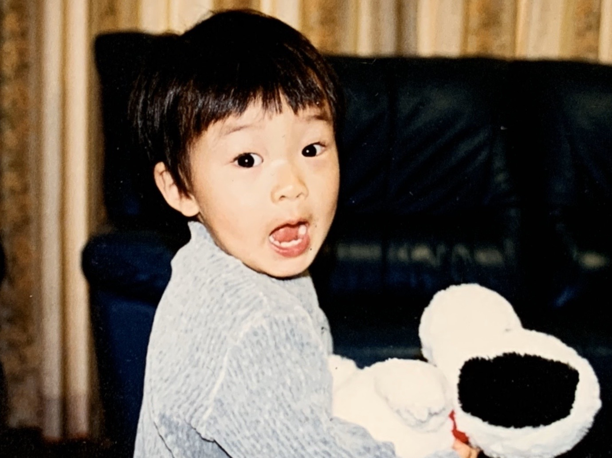

Keisuke Okazaki
1999年山口県生まれ. 神奈川県在住.
- Skills -
Ableton Live / Processing / p5.js / Adobe Illustrator / HTML&CSS
- Education -
[2006 - 2012] 下関市立川棚小学校
[2012 - 2015] 下関市立夢が丘中学校
[2015 - 2018] 山口県立下関西高等学校
[2019 - 2020] Nakazawa Lab. Keio SFC
[2020 - Current] Computational Creativity Lab. Keio SFC